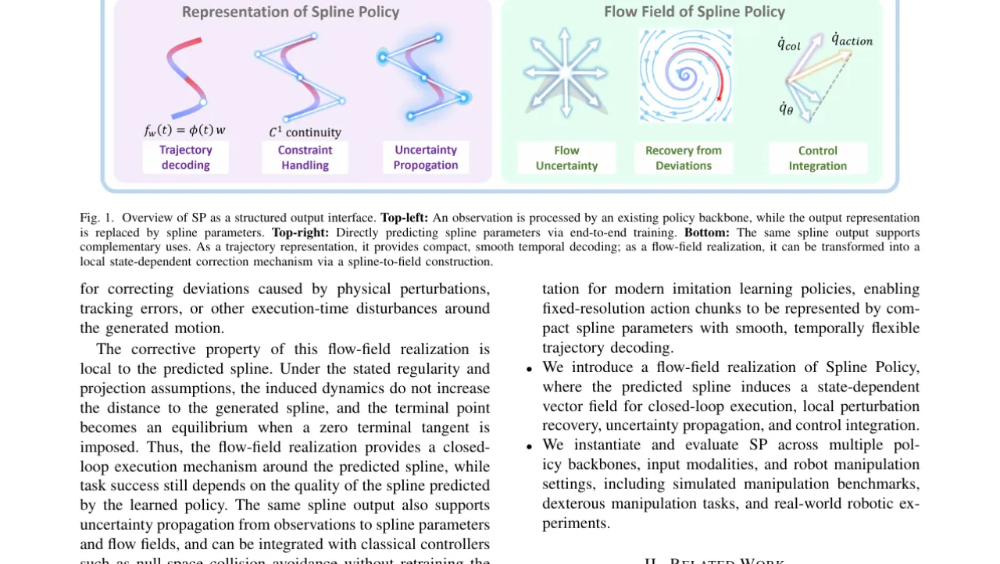
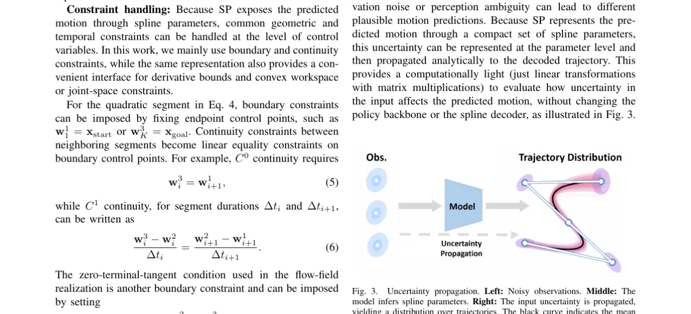
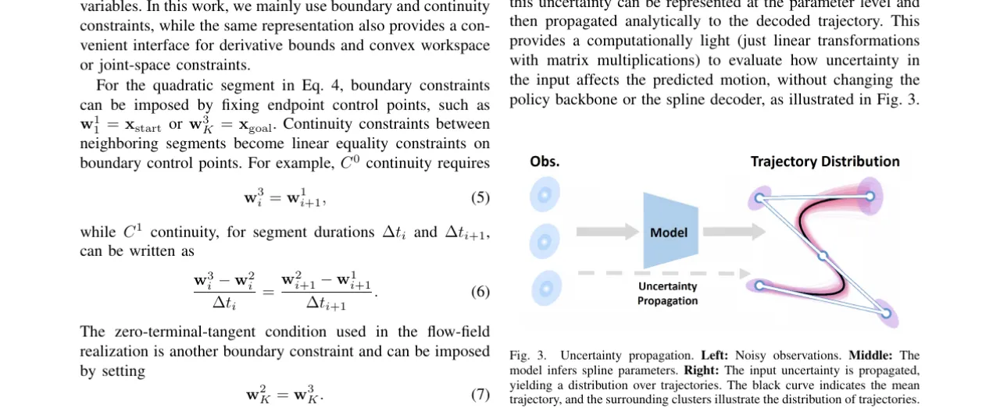
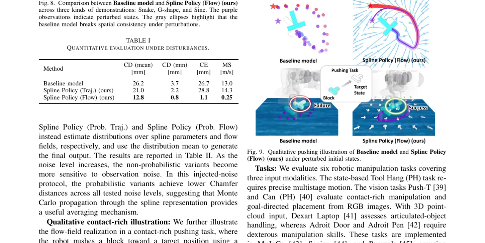
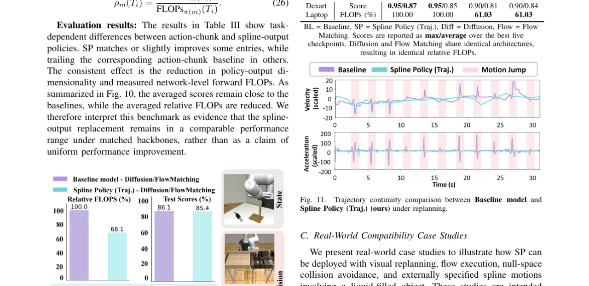
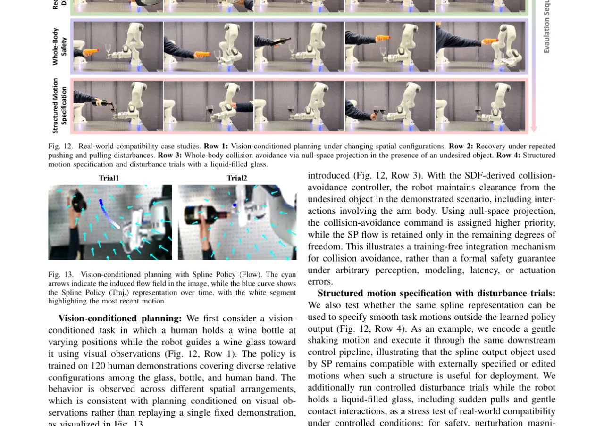

现代模仿学习策略通常以固定分辨率的动作块（action chunks）为输出，丧失了轨迹的几何与时序结构。本文提出 Spline Policy（SP）：将策略输出替换为样条参数，在保持主干网络不变的同时，使预测对象从离散序列升级为紧凑的连续轨迹，并自然支持多时间分辨率解码、参数空间约束处理、不确定性传播，以及基于解析距离场的闭环流场执行。
现有的模仿学习策略（ACT、Diffusion Policy、FMP、VLA 等）以固定长度的动作序列（action chunk）为输出。这种设计简洁有效，但缺乏几何连续性、时序结构与控制接口：输出的点序列无法直接表达速度、加速度约束，也无法在参数空间内完成轨迹修正或不确定性量化。
"Modern imitation-learning policies for robot manipulation often represent actions as fixed-resolution action chunks, which are simple and effective but expose limited geometric and temporal structure before execution."

SP 的核心思想是只改变输出接口，不改变感知主干。给定观测 o，策略主干输出样条参数 w_θ(o)，由拼接样条基函数 φ(t) 解码为连续轨迹 f_{w_θ(o)}(t) = φ(t) w_θ(o)。在此基础上，SP 提供三类结构化操作：轨迹解码、参数空间约束处理，以及不确定性传播。对于二次样条，还可进一步将轨迹转化为基于解析距离场的向量流场（flow field），支持闭环执行。
策略输出 K 段拼接二次 Bernstein 样条，每段由 3 个控制点参数化。连续性约束（C⁰、C¹、C²）通过相邻段端点的线性等式约束施加，无需修改网络结构。同一套样条参数可在不同控制频率下解码，解耦了策略学习频率与下游控制器频率。


对于二次样条，样条到距离场的解析变换 [文献23] 给出从任意状态 x 到样条的有符号距离 d_θ(x) 及法向量 n_θ(x)。SP 流场由两项叠加构成：
可以证明，在正则性与投影假设下，该流场的诱导动力学不增加到样条的距离（Lyapunov 分析见附录 VII-B），终点处切线为零时终点成为吸引子，提供原则上的局部修正机制。
SP 流场可映射至配置空间：q̇_θ = J^†_ψ(q) F_θ(ψ(q))。当障碍物靠近时，基于机器人有符号距离场 Γ_SDF 的碰撞回避速度 q̇_col 被赋予更高优先级，SP 速度投影至其零空间：q̇_θ,proj = (I − ∇_q Γ^† ∇_q Γ) q̇_θ，最终命令 q̇_action = q̇_col + q̇_θ,proj。全程无需重训练策略主干。
实验分三个层次：低维 LASA 基准（分析流场机制）、仿真操控基准（SP 作为轨迹输出接口与动作块基线对比）、以及真实机器人案例研究（展示部署层面的兼容性）。主要使用 Diffusion Policy（DP）和 Flow Matching Policy（FMP）作为对齐主干，对应变体分别标记为 SP-Diff / BL-Diff、SP-Flow / BL-Flow。

在 LASA 数据集（Snake、G-Shape、Sine 三种演示）的 25 次扰动实验中，Spline Policy (Flow) 在 Chamfer Distance (CD)、Convergence Error (CE)、Maximum Speed (MS) 三项指标均优于基线与 SP (Traj.)。
| 方法 | CD mean [mm] | CD min [mm] | CE [mm] | MS [m/s] |
|---|---|---|---|---|
| Baseline model | 26.2 | 3.7 | 26.7 | 13.0 |
| Spline Policy (Traj.) ours | 21.0 | 2.2 | 28.8 | 14.3 |
| Spline Policy (Flow) ours | 12.8 | 0.8 | 1.1 | 0.25 |
表 I：扰动条件下的定量评估。CD = Chamfer Distance；CE = Convergence Error；MS = Maximum Speed。数据来自论文 Table I。
在注入高斯观测噪声（σ = 10–40 mm）的实验中，概率变体 Spline Policy (Prob. Traj.) ours 在所有噪声水平下 CD 均最低，Spline Policy (Prob. Flow) ours 次之，均优于基线。具体数值见论文 Table II：σ=10 时 SP(Prob.Traj.) 达 0.7 mm，σ=40 时达 6.1 mm（基线为 20.4 mm）。

SP 在六个任务上（Tool Hang、Can、Push-T、Adroit Door、Adroit Pen、Dexart Laptop）的平均得分与基线相当，"consistent effect is the reduction in policy-output dimensionality and measured network-level forward FLOPs"（引自论文），不作为性能均匀提升的主张，而是等效性能下更高效的证据。
在 Push-T 任务的重规划实验中，Spline Policy (Traj.) 可施加跨 replanning 边界的 C¹ 连续性，使速度曲线平滑；基线动作块在 replanning 边界处出现速度不连续（"Motion Jump"），加速度更剧烈。

真实机器人成功率（Table V，SP-Traj. 不同主干，10 次试验）：
| 任务 | SP-ACT | SP-Diff | SP-PI05 |
|---|---|---|---|
| PushT | 0/10 | 6/10 | 10/10 |
| Toy packing | 5/10 | 8/10 | 9/10 |
注：三种主干（ACT 52M、Diffusion 270M、PI05 VLA 4B）共用 SP 轨迹接口，主干规模差异导致性能差异，非 SP 接口本身对比。数据来自论文 Table V。
SP 更改的是预测动作对象的表示，而非策略主干。"It does not remove the need for an accurate and expressive policy backbone. If the policy predicts an inappropriate spline, the structured decoder or the induced flow field cannot by itself guarantee task success."（引自原文）
"The distance-to-spline corrective property applies to the generated motion under the assumptions of the analytical construction, not to arbitrary task objectives or arbitrary off-manifold states. SP may also be less suitable for highly discontinuous or dynamic interactions, such as hitting a moving object, where additional task-specific modeling or engineering may be required."（引自原文）
当前解析距离场与流场构建依赖拼接二次样条的 C⁰/C¹ 连续性。"Extending the construction to broader spline families and evaluating uncertainty-aware or constraint-aware execution policies are important directions for future work."（引自原文）
真实机器人实验为兼容性案例研究，"intended as system-level demonstrations of compatibility, rather than controlled comparisons against action-chunk policies"（引自原文）。不同主干的模型规模、预训练、优化器与训练时长均不同，成功率差异不能单独归因于主干架构。